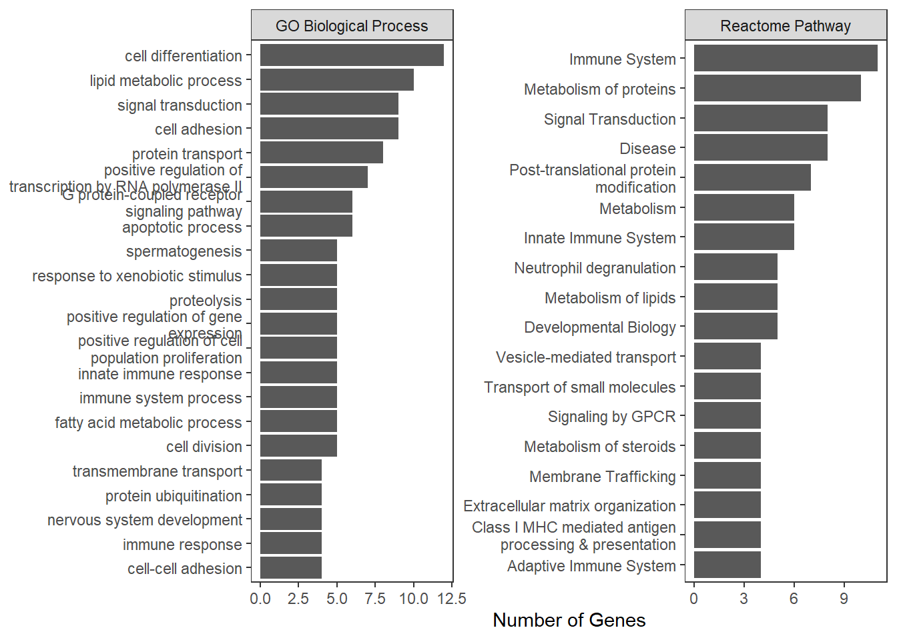

7 SNP Annotation
7.1 Libraries
## ******************************************## * *## * Welcome to WebGestaltR ! *## * *## ******************************************## ## ReactomePA v1.54.0 Learn more at https://yulab-smu.top/contribution-knowledge-mining/
##
## Please cite:
##
## Guangchuang Yu, Qing-Yu He. ReactomePA: an R/Bioconductor package for
## reactome pathway analysis and visualization. Molecular BioSystems.
## 2016, 12(2):477-479## [conflicted] Will prefer base::intersect over any other
## package.7.2 Data
Read in: SNP gene/exon/cds information
gwas_snp <-
read.csv("Output Files/allsamples_gwas.csv")
fst_sd_genes <-
fread("Input Files/allsamples_fst_sd_outlier_genes_snps.txt")
fst_sd_exons <-
fread("Input Files/allsamples_fst_sd_outlier_exons_snps.txt")
fst_sd_cds <-
fread("Input Files/allsamples_fst_sd_outlier_cds_snps.txt")
fst_sd_fst <-
read.csv("Output Files/allsamples_fst_sd_outlierposition.csv")
pv_genes <-
fread("Input Files/GSC_HSeal_1.0_HiC_genes.gff3")7.4 FST 5 SD
7.4.1 ID genes
fst_sd_genes_tidy <-
fst_sd_genes %>%
mutate(gene = V9,
gene = str_split_fixed(gene, ";", 5),
gene = str_extract(gene[,4], "(?<=to ).*(?=:)")) %>%
filter(!is.na(gene)) %>%
mutate(classification =
ifelse(V4 %in% fst_sd_cds$V4, "cds",
ifelse(V4 %in% fst_sd_exons$V4, "exon", "gene")))
write.csv(fst_sd_genes_tidy, "Output Files/allsamples_fst_sd_snp_geneid.csv")7.4.2 Over-representation
7.4.2.1 GO Terms
go_bp_sd <-
WebGestaltR(enrichMethod="ORA", organism="hsapiens",
enrichDatabase="geneontology_Biological_Process",
interestGene = fst_sd_genes_tidy$gene, interestGeneType = "genesymbol",
referenceGene = pv_genes_tidy$gene, referenceGeneType = "genesymbol",
sigMethod = "fdr", fdrThr = 0.05,
isOutput = FALSE)## Loading the functional categories...
## Loading the ID list...
## Loading the reference list...
## Performing the enrichment analysis...## Warning in oraEnrichment(interestGeneList, referenceGeneList, geneSet, minNum =
## minNum, : No significant gene set is identified based on FDR 0.05!go_cc_sd <-
WebGestaltR(enrichMethod="ORA", organism="hsapiens",
enrichDatabase="geneontology_Cellular_Component",
interestGene = fst_sd_genes_tidy$gene, interestGeneType = "genesymbol",
referenceGene = pv_genes_tidy$gene, referenceGeneType = "genesymbol",
sigMethod = "fdr", fdrThr = 0.05,
isOutput = FALSE)## Loading the functional categories...
## Loading the ID list...
## Loading the reference list...
## Performing the enrichment analysis...## Warning in oraEnrichment(interestGeneList, referenceGeneList, geneSet, minNum =
## minNum, : No significant gene set is identified based on FDR 0.05!go_mf_sd <-
WebGestaltR(enrichMethod="ORA", organism="hsapiens",
enrichDatabase="geneontology_Molecular_Function",
interestGene = fst_sd_genes_tidy$gene, interestGeneType = "genesymbol",
referenceGene = pv_genes_tidy$gene, referenceGeneType = "genesymbol",
sigMethod = "fdr", fdrThr = 0.05,
isOutput = FALSE)## Loading the functional categories...
## Loading the ID list...
## Loading the reference list...
## Performing the enrichment analysis...## Warning in oraEnrichment(interestGeneList, referenceGeneList, geneSet, minNum =
## minNum, : No significant gene set is identified based on FDR 0.05!7.4.2.2 KEGG Pathway
kegg_sd <-
WebGestaltR(enrichMethod = "ORA", organism = "hsapiens",
enrichDatabase = "pathway_KEGG",
interestGene = fst_sd_genes_tidy$gene, interestGeneType = "genesymbol",
referenceGene = pv_genes_tidy$gene, referenceGeneType = "genesymbol",
minNum = 5, sigMethod = "fdr", isOutput = FALSE) ## Loading the functional categories...
## Loading the ID list...
## Loading the reference list...
## Performing the enrichment analysis...| geneSet | description | link | size | overlap | expect | enrichmentRatio | pValue | FDR | overlapId | userId |
|---|---|---|---|---|---|---|---|---|---|---|
| hsa04931 | Insulin resistance | http://www.kegg.jp/kegg-bin/show_pathway?hsa04931+11001+32+5291+5524+5792+5836+6720 | 101 | 7 | 0.6380715 | 10.970558 | 0.0000025 | 0.0008123 | 11001;32;5291;5524;5792;5836;6720 | PTPA;ACACB;SREBF1;PTPRF;SLC27A2;PYGL;PIK3CB |
| hsa04910 | Insulin signaling pathway | http://www.kegg.jp/kegg-bin/show_pathway?hsa04910+32+5291+5792+5836+6655+6720 | 123 | 6 | 0.7770574 | 7.721438 | 0.0001045 | 0.0168825 | 32;5291;5792;5836;6655;6720 | ACACB;SREBF1;PTPRF;SOS2;PYGL;PIK3CB |
7.4.3 Biomart annotation
Each gene was manually annotated with Ensembl identifier to query Ensembl’s Biomart
snp_ensembl <-
read.csv("Input Files/allsamples_fst_sd_snp_ensemblid.csv")
ensembl <-
useEnsembl(biomart = "ensembl",
dataset = "hsapiens_gene_ensembl")## Ensembl site unresponsive, trying asia mirror7.4.3.1 Entrez description
snp_entrez_description <-
getBM(attributes = c("ensembl_gene_id",
"entrezgene_description"),
filter = "ensembl_gene_id",
values = snp_ensembl$Ensembl.ID,
mart = ensembl,
uniqueRows = TRUE)
snp_entrez_description %>%
kable() %>%
kable_styling("basic")| ensembl_gene_id | entrezgene_description |
|---|---|
| ENSG00000004948 | calcitonin receptor |
| ENSG00000005206 | signal peptide peptidase like 2B |
| ENSG00000006555 | tetratricopeptide repeat domain 22 |
| ENSG00000011426 | anillin, actin binding protein |
| ENSG00000013374 | negative regulator of ubiquitin like proteins 1 |
| ENSG00000014216 | calpain 1 |
| ENSG00000023697 | deoxyribose-phosphate aldolase |
| ENSG00000025800 | karyopherin subunit alpha 6 |
| ENSG00000039560 | retinoic acid induced 14 |
| ENSG00000048342 | coiled-coil and C2 domain containing 2A |
| ENSG00000051382 | phosphatidylinositol-4,5-bisphosphate 3-kinase catalytic subunit beta |
| ENSG00000053108 | follistatin like 4 |
| ENSG00000064726 | BTB domain containing 1 |
| ENSG00000064961 | high mobility group 20B |
| ENSG00000069122 | adhesion G protein-coupled receptor F5 |
| ENSG00000069188 | sidekick cell adhesion molecule 2 |
| ENSG00000072310 | sterol regulatory element binding transcription factor 1 |
| ENSG00000074603 | dipeptidyl peptidase 8 |
| ENSG00000076555 | acetyl-CoA carboxylase beta |
| ENSG00000089199 | chromogranin B |
| ENSG00000100485 | SOS Ras/Rho guanine nucleotide exchange factor 2 |
| ENSG00000100504 | glycogen phosphorylase L |
| ENSG00000103061 | solute carrier family 7 member 6 opposite strand |
| ENSG00000103091 | WD repeat domain 59 |
| ENSG00000104731 | kelch domain containing 4 |
| ENSG00000109466 | kelch like family member 2 |
| ENSG00000110427 | KIAA1549 like |
| ENSG00000114113 | retinol binding protein 2 |
| ENSG00000115850 | lactase |
| ENSG00000116120 | phenylalanyl-tRNA synthetase subunit beta |
| ENSG00000116141 | microtubule affinity regulating kinase 1 |
| ENSG00000116198 | centrosomal protein 104 |
| ENSG00000116604 | myocyte enhancer factor 2D |
| ENSG00000119383 | protein phosphatase 2 phosphatase activator |
| ENSG00000119408 | NIMA related kinase 6 |
| ENSG00000119414 | protein phosphatase 6 catalytic subunit |
| ENSG00000119844 | aftiphilin |
| ENSG00000119979 | DENN domain containing 10 |
| ENSG00000120885 | clusterin |
| ENSG00000122012 | synaptic vesicle glycoprotein 2C |
| ENSG00000123146 | adhesion G protein-coupled receptor E5 |
| ENSG00000125337 | kinesin family member 25 |
| ENSG00000128342 | LIF interleukin 6 family cytokine |
| ENSG00000130560 | UBA domain containing 1 |
| ENSG00000132623 | ankyrin repeat and EF-hand domain containing 1 |
| ENSG00000133962 | cation channel sperm associated auxiliary subunit beta |
| ENSG00000138029 | hydroxyacyl-CoA dehydrogenase trifunctional multienzyme complex subunit beta |
| ENSG00000138448 | integrin subunit alpha V |
| ENSG00000140284 | solute carrier family 27 member 2 |
| ENSG00000141456 | proline, glutamate and leucine rich protein 1 |
| ENSG00000142319 | solute carrier family 6 member 3 |
| ENSG00000142611 | PR/SET domain 16 |
| ENSG00000142949 | protein tyrosine phosphatase receptor type F |
| ENSG00000145536 | ADAM metallopeptidase with thrombospondin type 1 motif 16 |
| ENSG00000145681 | hyaluronan and proteoglycan link protein 1 |
| ENSG00000146005 | pleckstrin and Sec7 domain containing 2 |
| ENSG00000147601 | telomeric repeat binding factor 1 |
| ENSG00000148498 | par-3 family cell polarity regulator |
| ENSG00000148824 | mitochondrial ribosome associated GTPase 1 |
| ENSG00000149547 | EI24 autophagy associated transmembrane protein |
| ENSG00000150551 | LY6/PLAUR domain containing 1 |
| ENSG00000151572 | anoctamin 4 |
| ENSG00000152104 | protein tyrosine phosphatase non-receptor type 14 |
| ENSG00000152700 | secretion associated Ras related GTPase 1B |
| ENSG00000153404 | pleckstrin homology and RhoGEF domain containing G4B |
| ENSG00000154114 | tubulin folding cofactor E like |
| ENSG00000158270 | collectin subfamily member 12 |
| ENSG00000158683 | polycystin 1 like 1, transient receptor potential channel interacting |
| ENSG00000159398 | carboxylesterase 5A |
| ENSG00000159409 | CUGBP Elav-like family member 3 |
| ENSG00000162390 | acyl-CoA thioesterase 11 |
| ENSG00000162851 | transcription factor B2, mitochondrial |
| ENSG00000163686 | abhydrolase domain containing 6, acylglycerol lipase |
| ENSG00000166411 | isocitrate dehydrogenase (NAD(+)) 3 catalytic subunit alpha |
| ENSG00000166796 | lactate dehydrogenase C |
| ENSG00000168061 | SAC3 domain containing 1 |
| ENSG00000168477 | tenascin XB |
| ENSG00000168676 | potassium channel tetramerization domain containing 19 |
| ENSG00000168872 | DEAD-box helicase 19A |
| ENSG00000169220 | regulator of G protein signaling 14 |
| ENSG00000169550 | mucin 15, cell surface associated |
| ENSG00000169994 | myosin VIIB |
| ENSG00000172893 | 7-dehydrocholesterol reductase |
| ENSG00000173166 | Ras association (RalGDS/AF-6) and pleckstrin homology domains 1 |
| ENSG00000177879 | adaptor related protein complex 3 subunit sigma 1 |
| ENSG00000179820 | myeloid associated differentiation marker |
| ENSG00000179919 | olfactory receptor family 10 subfamily A member 7 |
| ENSG00000182985 | cell adhesion molecule 1 |
| ENSG00000184988 | transmembrane protein 106A |
| ENSG00000185963 | BICD cargo adaptor 2 |
| ENSG00000186395 | keratin 10 |
| ENSG00000186487 | myelin transcription factor 1 like |
| ENSG00000188730 | von Willebrand factor C domain containing 2 |
| ENSG00000196369 | SLIT-ROBO Rho GTPase activating protein 2B |
| ENSG00000196549 | membrane metalloendopeptidase |
| ENSG00000198010 | DLG associated protein 2 |
| ENSG00000198734 | coagulation factor V |
| ENSG00000204764 | RAN binding protein 17 |
| ENSG00000213699 | solute carrier family 35 member F6 |
| ENSG00000224383 | proline rich 29 |
| ENSG00000225697 | solute carrier family 26 member 6 |
7.4.3.2 GO terms
snp_go <-
getBM(attributes = c("ensembl_gene_id",
"go_id", "name_1006", "definition_1006", "namespace_1003"),
filter = "ensembl_gene_id",
values = snp_ensembl$Ensembl.ID,
mart = ensembl,
uniqueRows = TRUE)
snp_go_tidy <-
snp_go %>%
group_by(name_1006) %>%
summarize(freq = n())
snp_go %>%
filter(namespace_1003 == "biological_process") %>%
group_by(name_1006) %>%
summarize(freq = n()) %>%
filter(freq > 3) %>%
ggplot(., aes(x = fct_reorder(name_1006, freq, .desc=TRUE),
y = freq)) +
geom_col() +
theme_bw() +
labs(x = "Biological Process", y = "Frequency") +
theme(panel.grid = element_blank()) +
coord_flip() 
snp_go %>%
filter(namespace_1003 == "molecular_function") %>%
group_by(name_1006) %>%
summarize(freq = n()) %>%
filter(freq > 3) %>%
ggplot(., aes(x = fct_reorder(name_1006, freq, .desc=TRUE),
y = freq)) +
geom_col() +
theme_bw() +
labs(x = "Molecular Function", y = "Frequency") +
theme(panel.grid = element_blank()) +
coord_flip() 
snp_go %>%
filter(namespace_1003 == "cellular_component") %>%
group_by(name_1006) %>%
summarize(freq = n()) %>%
filter(freq > 3) %>%
ggplot(., aes(x = fct_reorder(name_1006, freq, .desc=TRUE),
y = freq)) +
geom_col() +
theme_bw() +
labs(x = "Cellular Component", y = "Frequency") +
theme(panel.grid = element_blank()) +
coord_flip() 
snp_go_output <-
snp_go %>%
group_by(name_1006) %>%
summarize(freq = n()) %>%
filter(freq > 3) %>%
filter(!name_1006 == "") %>%
merge(., snp_go, by = "name_1006", all.x = TRUE, all.y = FALSE) %>%
filter(!duplicated(go_id))
write.csv(snp_go_output,
"Output Files/allsamples_fst_sd_snp_goterm.csv",
row.names = FALSE)7.4.3.3 Reactome pathways
all_reactome <-
as.data.frame(reactomePATHID2NAME)
snp_reactome <-
getBM(attributes = c("ensembl_gene_id",
"reactome"),
filter = "ensembl_gene_id",
values = snp_ensembl$Ensembl.ID,
mart = ensembl,
uniqueRows = TRUE) %>%
filter(!reactome == "") %>%
merge(., all_reactome, by.x = "reactome", by.y = "DB_ID") %>%
mutate(path_name = gsub("Homo sapiens: ", "", path_name))
snp_reactome %>%
group_by(path_name) %>%
summarize(freq = n()) %>%
filter(freq > 3) %>%
ggplot(., aes(x = fct_reorder(path_name, freq, .desc=TRUE),
y = freq)) +
geom_col() +
theme_bw() +
labs(x = "Reactome Pathway", y = "Frequeny") +
theme(panel.grid = element_blank()) +
coord_flip()
7.4.3.4 Reactome Pathway Over-representation
# Convert to entrez gene ID
snp_entrez_id <-
getBM(attributes = c("ensembl_gene_id", "entrezgene_id"),
filter = "ensembl_gene_id",
values = snp_ensembl$Ensembl.ID,
mart = ensembl,
uniqueRows = TRUE)
snp_overrep_reactome <-
enrichPathway(gene = snp_entrez_id$entrezgene_id,
organism = "human",
pvalueCutoff = 0.05,
pAdjustMethod = "fdr",
readable = TRUE,
universe = pv_genes_tidy$gene,
minGSSize = 2)$result## Loading required package: org.Hs.eg.db## ## No gene sets have size between 2 and 500 ...## --> return NULL...7.4.4 Exonic, CDS Genes
7.4.4.2 GO terms
fst_sd_cds_tidy %>%
merge(., snp_go, by.x = "Ensembl.ID", by.y = "ensembl_gene_id") %>%
dplyr::select(name_1006, namespace_1003) %>%
arrange(namespace_1003) %>%
kable() %>%
kable_styling("basic")| name_1006 | namespace_1003 |
|---|---|
| apoptotic process | biological_process |
| autophagy | biological_process |
| intrinsic apoptotic signaling pathway in response to DNA damage | biological_process |
| response to xenobiotic stimulus | biological_process |
| negative regulation of cell growth | biological_process |
| neuromuscular process controlling balance | biological_process |
| positive regulation of intrinsic apoptotic signaling pathway | biological_process |
| macroautophagy | biological_process |
| nucleus | cellular_component |
| cytoplasm | cellular_component |
| membrane | cellular_component |
| endoplasmic reticulum | cellular_component |
| cytosol | cellular_component |
| Golgi apparatus | cellular_component |
| endoplasmic reticulum membrane | cellular_component |
| nuclear membrane | cellular_component |
| protein binding | molecular_function |
| importin-alpha family protein binding | molecular_function |
fst_sd_exons_tidy %>%
filter(!classification == "cds") %>%
merge(., snp_go, by.x = "Ensembl.ID", by.y = "ensembl_gene_id") %>%
dplyr::select(name_1006, namespace_1003) %>%
filter(!name_1006 == "") %>%
group_by(name_1006, namespace_1003) %>%
summarize(freq = n()) %>%
arrange(namespace_1003) %>%
kable() %>%
kable_styling("basic")## `summarise()` has grouped output by 'name_1006'. You can
## override using the `.groups` argument.| name_1006 | namespace_1003 | freq |
|---|---|---|
| cell adhesion | biological_process | 1 |
| cell differentiation | biological_process | 1 |
| central nervous system development | biological_process | 1 |
| membrane protein ectodomain proteolysis | biological_process | 1 |
| membrane protein intracellular domain proteolysis | biological_process | 1 |
| membrane protein proteolysis | biological_process | 1 |
| muscle organ development | biological_process | 1 |
| neurogenesis | biological_process | 1 |
| protein ubiquitination | biological_process | 1 |
| proteolysis | biological_process | 1 |
| regulation of immune response | biological_process | 1 |
| regulation of protein binding | biological_process | 1 |
| regulation of tumor necrosis factor-mediated signaling pathway | biological_process | 1 |
| skeletal system development | biological_process | 1 |
| Golgi apparatus | cellular_component | 1 |
| Golgi-associated vesicle membrane | cellular_component | 1 |
| P-body | cellular_component | 1 |
| actin cytoskeleton | cellular_component | 1 |
| centrosome | cellular_component | 1 |
| cytoplasm | cellular_component | 1 |
| cytoplasmic ribonucleoprotein granule | cellular_component | 1 |
| cytosol | cellular_component | 1 |
| endosome | cellular_component | 1 |
| endosome membrane | cellular_component | 1 |
| extracellular matrix | cellular_component | 1 |
| extracellular region | cellular_component | 1 |
| extracellular space | cellular_component | 1 |
| lysosomal membrane | cellular_component | 1 |
| lysosome | cellular_component | 1 |
| membrane | cellular_component | 1 |
| nucleoplasm | cellular_component | 2 |
| perineuronal net | cellular_component | 1 |
| plasma membrane | cellular_component | 1 |
| protein-containing complex | cellular_component | 1 |
| synapse | cellular_component | 1 |
| cullin family protein binding | molecular_function | 1 |
| extracellular matrix structural constituent conferring compression resistance | molecular_function | 1 |
| hyaluronic acid binding | molecular_function | 1 |
| hydrolase activity | molecular_function | 1 |
| identical protein binding | molecular_function | 1 |
| peptidase activity | molecular_function | 1 |
| protein binding | molecular_function | 2 |
| protein homodimerization activity | molecular_function | 1 |
7.4.4.3 Reactome Pathways
fst_sd_cds_tidy %>%
merge(., snp_reactome, by.x = "Ensembl.ID", by.y = "ensembl_gene_id") %>%
dplyr::select(reactome, path_name) %>%
arrange(path_name) %>%
kable() %>%
kable_styling("basic")| reactome | path_name |
|---|---|
| NA | NA |
| :——– | :——— |
fst_sd_exons_tidy %>%
filter(!classification == "cds") %>%
merge(., snp_reactome, by.x = "Ensembl.ID", by.y = "ensembl_gene_id") %>%
arrange(path_name) %>%
dplyr::select(reactome, path_name) %>%
kable() %>%
kable_styling("basic")| reactome | path_name |
|---|---|
| R-HSA-1280218 | Adaptive Immune System |
| R-HSA-983168 | Antigen processing: Ubiquitination & Proteasome degradation |
| R-HSA-983169 | Class I MHC mediated antigen processing & presentation |
| R-HSA-73887 | Death Receptor Signaling |
| R-HSA-168256 | Immune System |
| R-HSA-392499 | Metabolism of proteins |
| R-HSA-8951664 | Neddylation |
| R-HSA-597592 | Post-translational protein modification |
| R-HSA-5357905 | Regulation of TNFR1 signaling |
| R-HSA-162582 | Signal Transduction |
| R-HSA-75893 | TNF signaling |
7.5 GWAS
gwas_snp <-
gwas_snp %>%
filter(fdr < 0.05) %>%
merge(., fst_sd_genes_tidy, by.x = "BP", by.y = "V4")
snp_ensembl %>%
filter(Gene == "HAPLN1") %>%
merge(., snp_go, by.x = "Ensembl.ID", by.y = "ensembl_gene_id") %>%
filter(!name_1006 == "") %>%
arrange(namespace_1003) %>%
dplyr::select(name_1006, namespace_1003) %>%
kable() %>%
kable_styling("basic")| name_1006 | namespace_1003 |
|---|---|
| cell adhesion | biological_process |
| central nervous system development | biological_process |
| skeletal system development | biological_process |
| perineuronal net | cellular_component |
| extracellular region | cellular_component |
| extracellular space | cellular_component |
| synapse | cellular_component |
| extracellular matrix | cellular_component |
| extracellular matrix structural constituent conferring compression resistance | molecular_function |
| hyaluronic acid binding | molecular_function |
snp_ensembl %>%
filter(Gene == "HAPLN1") %>%
merge(., snp_reactome, by.x = "Ensembl.ID", by.y = "ensembl_gene_id") %>%
kable() %>%
kable_styling("basic")| Ensembl.ID | Gene | reactome | path_name |
|---|---|---|---|
| NA | NA | NA | NA |
| :———- | :—- | :——– | :——— |
HAPLN1:
Predicted to enable hyaluronic acid binding activity. Predicted to be an extracellular matrix structural constituent conferring compression resistance. Predicted to be involved in nervous system development; positive regulation of neuroblast proliferation; and skeletal system development.
7.6 Follow up for Discussion
7.6.1 Innate Immune System
innate_go <-
snp_go %>%
filter(grepl("innate immune|cytokine|pattern recognition receptor", name_1006,
ignore.case = TRUE)) %>%
merge(., snp_ensembl, by.x = "ensembl_gene_id", by.y = "Ensembl.ID") %>%
merge(., snp_entrez_description, by = "ensembl_gene_id")
innate_reactome <-
snp_reactome %>%
filter(grepl("innate|cytokine|interleukin", path_name, ignore.case = TRUE)) %>%
merge(., snp_ensembl, by.x = "ensembl_gene_id", by.y = "Ensembl.ID")
innate_gene <-
c(innate_go$Gene, innate_reactome$Gene) %>%
data.frame() %>%
distinct()7.6.2 Signal Transduction
signal_go <-
snp_go %>%
filter(grepl("signal", name_1006, ignore.case = TRUE)) %>%
merge(., snp_ensembl, by.x = "ensembl_gene_id", by.y = "Ensembl.ID") %>%
merge(., snp_entrez_description, by = "ensembl_gene_id")
signal_reactome <-
snp_reactome %>%
filter(grepl("signal", path_name, ignore.case = TRUE)) %>%
merge(., snp_ensembl, by.x = "ensembl_gene_id", by.y = "Ensembl.ID")
signal_gene <-
c(signal_go$Gene, signal_reactome$Gene) %>%
data.frame() %>%
distinct()7.6.3 Cytokines
cytokine_go <-
snp_go %>%
filter(grepl("cytokine ", name_1006, ignore.case = TRUE)) %>%
merge(., snp_ensembl, by.x = "ensembl_gene_id", by.y = "Ensembl.ID") %>%
merge(., snp_entrez_description, by = "ensembl_gene_id")
cytokine_reactome <-
snp_reactome %>%
filter(grepl("cytokine ", path_name, ignore.case = TRUE)) %>%
merge(., snp_ensembl, by.x = "ensembl_gene_id", by.y = "Ensembl.ID")
cytokine_gene <-
c(cytokine_go$Gene, cytokine_reactome$Gene) %>%
data.frame() %>%
distinct()7.6.4 Adaptive Immune System
adaptive_go <-
snp_go %>%
filter(grepl("adaptive|antigen |MHC", name_1006, ignore.case = TRUE)) %>%
merge(., snp_ensembl, by.x = "ensembl_gene_id", by.y = "Ensembl.ID")
adaptive_reactome <-
snp_reactome %>%
filter(grepl("adaptive|antigen |MHC|complement", path_name, ignore.case = TRUE)) %>%
merge(., snp_ensembl, by.x = "ensembl_gene_id", by.y = "Ensembl.ID")
adaptive_gene <-
c(adaptive_go$Gene, adaptive_reactome$Gene) %>%
data.frame() %>%
distinct()7.6.5 Nervous System
nervous_go <-
snp_go %>%
filter(grepl("nervous|neur|axon|synap|dendrit|brain|dopamine|norepinephrine|sensory",
name_1006, ignore.case = TRUE)) %>%
merge(., snp_ensembl, by.x = "ensembl_gene_id", by.y = "Ensembl.ID")
nervous_reactome <-
snp_reactome %>%
filter(grepl("nervous|neur|synap|axon", path_name, ignore.case = TRUE)) %>%
merge(., snp_ensembl, by.x = "ensembl_gene_id", by.y = "Ensembl.ID")
nervous_gene <-
c(nervous_go$Gene, nervous_reactome$Gene) %>%
data.frame() %>%
distinct()7.7 Manuscript Figure
bp_freq <-
snp_go %>%
filter(namespace_1003 == "biological_process") %>%
group_by(name_1006) %>%
summarize(freq = n()) %>%
filter(freq > 3) %>%
mutate(category = "GO Biological Process") %>%
setNames(c("title", "freq", "category"))
reactome_freq <-
snp_reactome %>%
group_by(path_name) %>%
summarize(freq = n()) %>%
filter(freq > 3) %>%
mutate(category = "Reactome Pathway") %>%
setNames(c("title", "freq", "category"))
ggplot(bp_freq, aes(x = fct_reorder(title, freq), y = freq)) +
geom_bar(stat = "identity", position = "dodge") +
labs(x=NULL, y="Number of Genes", title = "GO Biological Process") +
scale_x_discrete(labels = function(description) str_wrap(description, width = 60)) +
coord_flip() +
theme_bw() +
theme(panel.grid=element_blank(), text=element_text(size=20))
ggplot(reactome_freq, aes(x = fct_reorder(title, freq), y = freq)) +
geom_bar(stat = "identity", position = "dodge") +
labs(x=NULL, y="Number of Genes", title = "Reactome Pathway") +
scale_x_discrete(labels = function(description) str_wrap(description, width = 35)) +
coord_flip() +
theme_bw() +
theme(panel.grid=element_blank(), text=element_text(size=20))
bp_reactome_freq <-
rbind(bp_freq, reactome_freq) %>%
ggplot(., aes(x=fct_reorder(title, freq), y = freq)) +
geom_bar(stat = "identity", position = "dodge") +
scale_x_discrete(labels = function(title) str_wrap(title, width = 35))+
labs(x = NULL, y = "Number of Genes") +
facet_wrap(~category, scale = "free") +
coord_flip() +
theme_bw() +
theme(panel.grid = element_blank())
bp_reactome_freq
7.8 Presentation Figure
adaptive_gene <-
adaptive_gene %>%
mutate(role = "Adaptive Immunity")
innate_gene <-
innate_gene %>%
mutate(role = "Innate Immunity")
nervous_gene <-
nervous_gene %>%
mutate(role = "Nervous System")
genes_all <-
rbind(adaptive_gene, innate_gene, nervous_gene) %>%
group_by(role) %>%
summarize(sum = n()) %>%
mutate(role = factor(role,
levels = c("Innate Immunity",
"Adaptive Immunity",
"Nervous System")))
snp_genes_plot <-
genes_all %>%
ggplot(., aes(x = role, y = sum, fill = role)) +
geom_bar(stat = "identity") +
scale_fill_manual(values = c("Innate Immunity" = "#B5CDD3",
"Adaptive Immunity" = "#AFBABB",
"Nervous System" = "#7F7B9A")) +
labs(x = NULL, y = "Number of Genes") +
scale_x_discrete(labels = function(role) str_wrap(role, width = 8)) +
theme_bw() +
theme(panel.grid = element_blank()) +
theme(legend.position = "none",
text = element_text(size = 20))
ggsave("Figures/snp_annotation_num.jpeg", snp_genes_plot,
width = 5, height = 5, units = "in")7.9 Link genes to SNPs for figure
snp_immune_genes <-
c(adaptive_gene$., innate_gene$.) %>%
data.frame() %>%
distinct() %>%
mutate(role = "Immune System")
snp_immunenervous_genes <-
intersect(snp_immune_genes$., nervous_gene$.) %>%
data.frame() %>%
mutate(role = "Immune & Nervous System")
snp_immune_genes <-
snp_immune_genes %>%
filter(!. %in% snp_immunenervous_genes$.)
snp_nervous_genes <-
nervous_gene %>%
filter(!. %in% snp_immunenervous_genes$.)
snp_genes <-
rbind(snp_immunenervous_genes, snp_immune_genes, snp_nervous_genes) %>%
setNames(c("gene", "role")) %>%
merge(., fst_sd_genes_tidy, by = "gene", all.x = TRUE, all.y = FALSE) %>%
mutate(snp = paste(V1, "_", V4, sep = "")) %>%
dplyr::select(c(gene, role, snp))
write.csv(snp_genes, "Output Files/snp_gene_roles.csv")